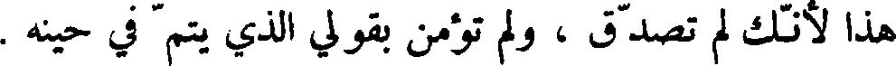
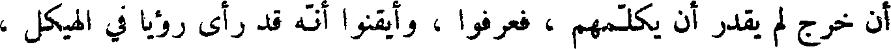
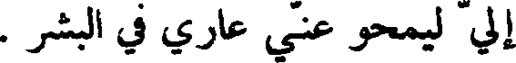
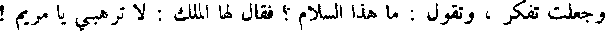
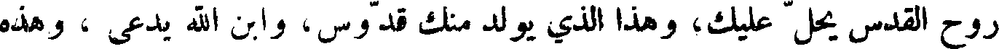

File: 000390.gt.txt (if the image is defective, simply delete all Arabic text and the line will be excluded)
البرية فصام أربعين يوما ، فاقترب إليه الشيطان فقال : إن كنت الآن ابن الله
File: 000391.gt.txt (if the image is defective, simply delete all Arabic text and the line will be excluded)
فمر هذه الحجار أن تصير خبزا ! فقال ايسوع : انه ليس بالخبز وحده يحيا
File: 000392.gt.txt (if the image is defective, simply delete all Arabic text and the line will be excluded)
البشر ، ولكن بكلمة الله ، فحمله ، فصيره على جناح الهيكل ، ثم قال له
File: 000393.gt.txt (if the image is defective, simply delete all Arabic text and the line will be excluded)
الشيطان : فألق نفسك إلى الأرض ، فانك أن كنت ابن الله تكنفتك ملائكته .
File: 000394.gt.txt (if the image is defective, simply delete all Arabic text and the line will be excluded)
فقال المسيح : انه مكتوب : لا تجرب الله بك ؛ ثم قال الشيطان: اذهب فأنا لله اسجد
File: 000395.gt.txt (if the image is defective, simply delete all Arabic text and the line will be excluded)
وإياه اعبد . فتركه الشيطان وذهب، ثم إن ملائكة الله، جل وعز، اقتربت منه ،
File: 000396.gt.txt (if the image is defective, simply delete all Arabic text and the line will be excluded)
فجعلوا يخدمونه ، ثم إن تلامذته اقتربوا إليه ، فجعل يكلمهم بأمثال ووحي ،
File: 000397.gt.txt (if the image is defective, simply delete all Arabic text and the line will be excluded)
ليقبل بقلوب الآباء على أبنائهم ، ويكونوا لله شعبا كاملا .
File: 000398.gt.txt (if the image is defective, simply delete all Arabic text and the line will be excluded)
فقال زكرياء للملك : كيف لي أن اعلم هذا ، وأنا شيخ ، وامرأتي كبيرة
File: 000399.gt.txt (if the image is defective, simply delete all Arabic text and the line will be excluded)
السن فقال له الملك : أني أنا جبريل القائم بين يدي الله ، عز وجل ، أرسلني
File: 000400.gt.txt (if the image is defective, simply delete all Arabic text and the line will be excluded)
لأبشرك بهذا ، فمن الآن ، فكن صامتا لا تتكلم حتى اليوم الذي يكون فيه
File: 000401.gt.txt (if the image is defective, simply delete all Arabic text and the line will be excluded)

هذا لأنك لم تصدق ، ولم تؤمن بقولي الذي يتم في حينه .
File: 000402.gt.txt (if the image is defective, simply delete all Arabic text and the line will be excluded)
وكان الشعب قياما ينتظرون زكرياء ، ويتعجبون من لبثه في الهيكل ، فلما
File: 000403.gt.txt (if the image is defective, simply delete all Arabic text and the line will be excluded)

أن خرج لم يقدر أن يكلمهم ، فعرفوا ، أيقنوا انه أقد رأى رؤيا في الهيكل ،
File: 000404.gt.txt (if the image is defective, simply delete all Arabic text and the line will be excluded)
فكان يومىء إليهم إيماء ، و لا يتكلم .
File: 000405.gt.txt (if the image is defective, simply delete all Arabic text and the line will be excluded)
فلما تمت أيام خدمته انصرف إلى بيته ، وحبلت اليسبع امرأته ، وأقامت
File: 000406.gt.txt (if the image is defective, simply delete all Arabic text and the line will be excluded)
تخفي نفسها اسهرا خمسة ، وتقول : هذا الذي صنع إلي الرب في أيام نظرة
File: 000407.gt.txt (if the image is defective, simply delete all Arabic text and the line will be excluded)

ألي ليمحو عني عاري في البشر .
File: 000408.gt.txt (if the image is defective, simply delete all Arabic text and the line will be excluded)
ولما كان في الشهر السادس من حمل امرأة زكريا أرسل الله جبريل الملك
File: 000409.gt.txt (if the image is defective, simply delete all Arabic text and the line will be excluded)
إلى جبل الجليل إلى مدينة تدعى ناصرة ، إلى فتاة عذراء مملكة برجل يسمى
File: 000410.gt.txt (if the image is defective, simply delete all Arabic text and the line will be excluded)
يوسف من آل داود ، اسمها مريم فدخل إليها الملك ، وقال لها : السلام عليك
File: 000411.gt.txt (if the image is defective, simply delete all Arabic text and the line will be excluded)
أيتها المملوءة من النعمة ، أيتها المباركة في النساء ! فلما رأته فزعت من كلامه ،
File: 000412.gt.txt (if the image is defective, simply delete all Arabic text and the line will be excluded)

وجعلت تفكر ، وتقول : ما هذا السلام ؟ فقال لها الملك : لا ترهبي يا مريم !
File: 000413.gt.txt (if the image is defective, simply delete all Arabic text and the line will be excluded)
قد لاقيت ووافيت عند الله نعمة ، بحق انك تقبلين حبلى ، وتلدين ابنا ، وسميه
File: 000414.gt.txt (if the image is defective, simply delete all Arabic text and the line will be excluded)
ايسوع ، ويكون عظيما ، وابن الأعلى يدعى ، ويعطيه الرب إلهه كرسي داود
File: 000415.gt.txt (if the image is defective, simply delete all Arabic text and the line will be excluded)
أبيه ، ويملك على آل يعقوب إلى الدهر ، و لا يكون لملكه فناء ، و لا انقطاع .
File: 000416.gt.txt (if the image is defective, simply delete all Arabic text and the line will be excluded)
فقالت مريم للملك : كيف يكون هذا ، ولم يمسسني رجل ؟ قال لها الملك :
File: 000417.gt.txt (if the image is defective, simply delete all Arabic text and the line will be excluded)

روح القدس يحل عليك، وهذا الذي يولد منك قدوس، وابن الله يدعى ، وهذه
File: 000418.gt.txt (if the image is defective, simply delete all Arabic text and the line will be excluded)
اليسبع نسيبتك ، فهي أيضا حبلى بابن ، على كبرها ، وهذا الشهر هو السادس
File: 000419.gt.txt (if the image is defective, simply delete all Arabic text and the line will be excluded)
لتلك التي تدعى عاقرا ، لأنه لا يعجز الله شيء ! فقالت مريم : أني أمة الله ،
To Save: `Ctrl+s`, make sure to choose `Webpage, complete`!